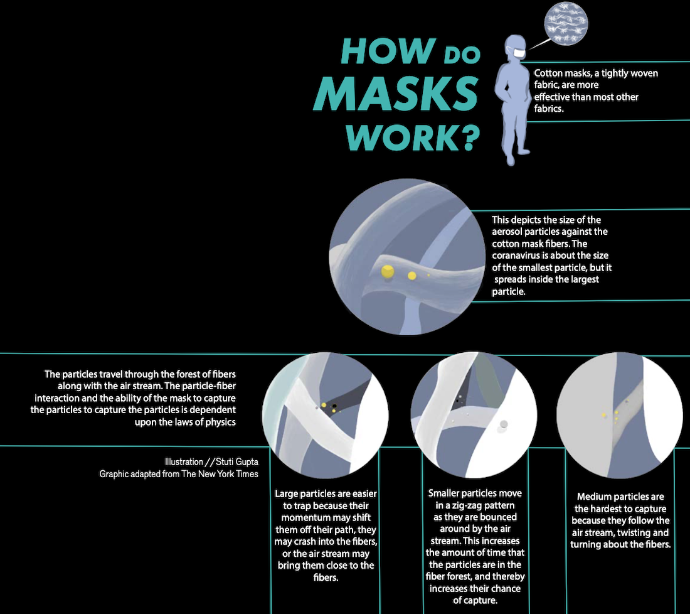

Graphics
Before I started journalism, I had always been an avid artist. I love how I can bring this artistic side into journalism. Here are a few of the graphics or drawings I created for our print publication, our online publication, and our broadcast network.
Unmasking mental health during the pandemic

I created this drawing for my online article covering adolescent mental health during the COVID-19 pandemic. It was drawn using Faber-Castell pens. The text was added using Adobe Photoshop.
Returning where we left off: distance learning
I created this drawing for my online article covering returning to distance learning at the beginning of the 2020-2021 school year. It was drawn using Faber-Castell pens and water color.
Top 10 of 2020: 10-minute breakfast recipes
I created this drawing for my "top 10 of 2020" widget online article covering the top 10 breakfasts of 2020. This is the first digital drawing that I have ever illustrated, and was made using Adobe Draw.
Playing the pandemic
I created this drawing for our February print issue cover story concerning playing sports during the pandemic. This graphic depicts the effectiveness of masks, and was made using Adobe Draw.
Jefferson recieves "AP Computer Science Female Diversity Award"
I created this drawing for my online article covering Jefferson recieving the "AP Computer Science Female Diversity Award" from the College Board. This graphic was made using Adobe Draw and Adobe Illustrator.
Wishing you a virtual Valentine's Day
I created this drawing for my broadcast feature covering how couples are staying connected and celebrating Valentine's Day during the pandemic. This graphic was made using Adobe Draw and Adobe Illustrator.